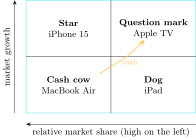

Definition
Business portfolio: the combination of the firm's activities and products. Portfolio analysis evaluates them to decide where to invest and divest; the best portfolio fits the firm's strengths and weaknesses to market opportunities. Steps: identify strategic business units (SBUs); assess the attractiveness of each; decide how much support each needs. Standard methods rate SBUs on market attractiveness and strength of the SBU's position.
Model
BCG matrix (Boston Consulting Group)
Proxy variables: market growth rate ≈ attractiveness; relative market share ≈ competitiveness.
| Quadrant | Share | Growth | Cash | Action |
|---|---|---|---|---|
| Star | high | high | high profit, needs heavy | invest to hold |
| investment | ||||
| Cash cow | high | low | high profit, little | milk, fund others |
| investment | ||||
| Question mark | low | high | thin profit, heavy | invest selectively or |
| investment | divest | |||
| Dog | low | low | low profit, low invest. | abandon |
Logic: mature, low-growth products generate cash to reinvest in growing ones — the portfolio must be balanced. Evolution: question mark → star → cash cow. Limits: simplifications, one proxy per axis.
Apple example: iPhone 15 → star; Apple TV → question mark; MacBook Air → cash cow; iPad → dog (in the course's placement).
Ansoff matrix
| Markets \ products | Existing | New |
|---|---|---|
| Existing | Market penetration | Product development |
| Coca-Cola | Fanta | |
| New | Market development | Diversification |
| Coca-Cola Zero | a new juice drink |
- Penetration: more sales of existing products to existing customers, no product change.
- Market development (expansion): new segments for existing products.
- Product development (innovation): changed or new products for existing segments.
- Diversification: start or acquire activities unrelated to current products and markets (highest risk).
Segmentation's output is a product/market matrix of this kind (segmentation).
Worked example
A firm has: A (share 2× leader, market +2%) → cash cow; B (share 0.3×, market +18%) → question mark; C (1.5×, +15%) → star; D (0.2×, +1%) → dog. Plan: use A's cash to fund C and the most promising B; phase out D.
Pitfall
Relative share is share divided by the largest competitor's share (> 1 means leader), not absolute share. BCG = what to fund; Ansoff = where to grow.
Recall
Draw BCG with the Apple products and the four actions; draw Ansoff with the Coca-Cola products and rank the strategies by risk.
Picture

Cash from cows funds question marks; successful question marks become stars.